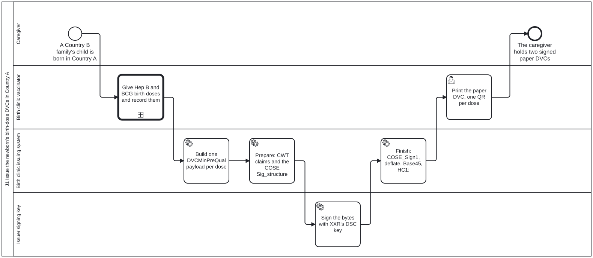
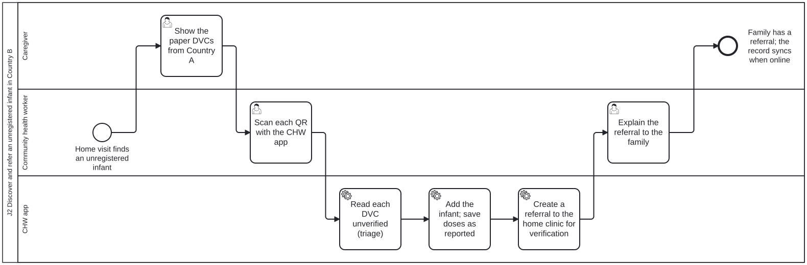
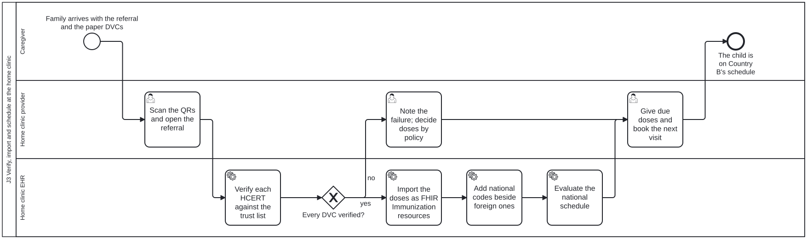
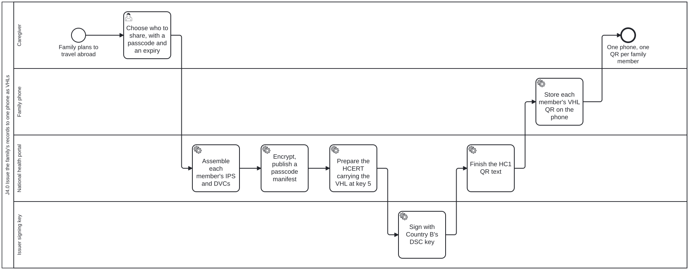
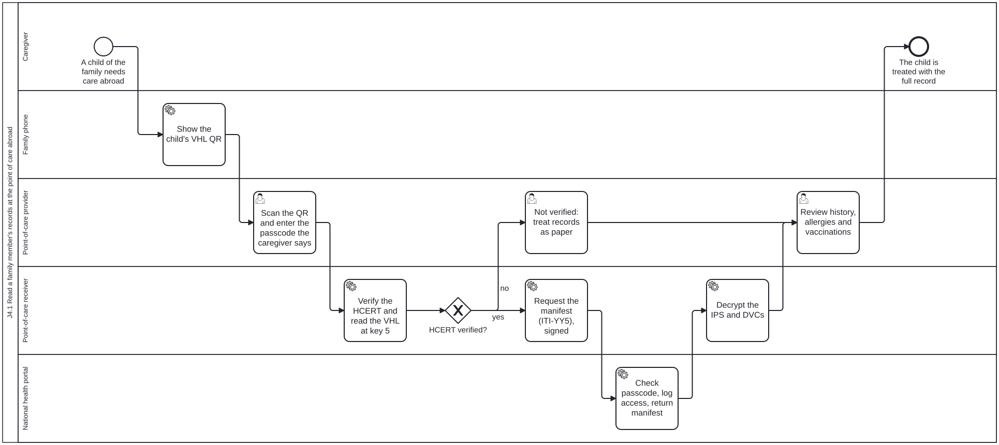

Journey map
Read across to follow one person. Read down to see everyone at one moment. Click a column to inspect it.
Is born, and gets his Hep B and BCG birth doses within hours.
“Two small jabs, and a record that will follow him.”
Is added to his household: the Onesan health system now knows he exists.
“Three weeks old, and now he counts.”
Back in Kesaro with a fever, he is seen by the doctor who vaccinated him at birth.
“A strange room, but nobody has to guess what he has had.”
Gives birth away from home and receives two paper cards at discharge.
“Will anyone back home believe these papers?”
Tells Vilay about the birth in Taifafeki and shows the cards.
“I hope we’re not in trouble for giving birth abroad.”
Receives a referral to the District Health Center.
“Another trip — but at least they know about his vaccines now.”
Brings Somsak in for the referral visit.
“They believe the Taifafeki papers!”
Leaves with a date for Somsak’s next vaccines.
“Now I know exactly when to come back.”
Relies on Bounmy’s phone for her own and the baby’s records.
“It’s on his phone. What if I travel without him?”
Watches the doctor see everything that happened since the birth.
“It all followed him.”
Confirms household details as head of household.
“Good, he’s on our family record now.”
Opens the family wallet: profiles for himself, Khamla and Somsak.
“One phone, three people — I can manage all of us.”
Creates a passcode-protected QR link for Somsak, valid for 14 days.
“I decide who sees it, and for how long.”
Shows the QR on his phone and says the passcode out loud.
“No folder of papers this time.”
Scans both QR cards and reads the doses, without checking their signatures.
“I can read it, but I can’t prove it’s real out here.”
Adds Somsak to the Sengmany household, saves the two doses as unverified and books a clinic referral.
“No signal for weeks — but I need to register him today.”
Scans the card; the tablet confirms the Taifafeki signature and marks the doses verified.
“A green tick — I can trust a hospital I’ve never heard of.”
Confirms the Taifafeki product equals the Onesan birth dose; the system books the 6-week vaccines.
“Different name, same vaccine — I can make that call.”
Gives Hep B and BCG birth doses and prints two signed QR vaccine cards.
“He isn’t Taifafeki, but he still needs a record he can take home.”
Scans the QR, enters the passcode Bounmy tells him, and sees all six doses.
“Born here, vaccinated there — and I can see all of it.”
2 signed paper cards (Hep B, BCG)
Held in: Khamla’s bagDoses read from the 2 cards; nothing saved yet
Held in: Paper cards + CHW phoneBaby registered; 2 doses saved as “reported by family”
Held in: CHW phone (waiting to sync)Doses verified; Taifafeki recorded as the source
Held in: District clinic recordsBirth doses count; next appointment booked
Held in: Onesan national health records12-month summary: 2 Taifafeki + 4 Onesan doses
Held in: Onesan national records + family walletShareable link created; data stays in Onesa
Held in: Onesan national records (QR is just a pointer)Viewed in Taifafeki, never copied; access logged in Onesa
Held in: Onesan national recordsThe baby has no Taifafeki ID number, so his records would normally stay locked inside the Taifafeki hospital’s system.
Without a check, a forged or mistyped card could quietly become an official record.
Babies born abroad are invisible to the home health system until civil registration catches up — sometimes months later.
Clinicians either distrust foreign paper and re-vaccinate, or trust it blindly.
Countries name and package vaccines differently, so doses get missed or repeated.
Many families share one smartphone; one-app-per-person designs leave them out.
Sending photos or PDFs of records leaks data and can’t be verified by the receiver.
Without the history, the doctor would repeat vaccines or have to guess.
A digitally signed QR card travels with the family — no ID number or database lookup needed.
The phone reads the card offline, and keeps “what the family told us” clearly separate from “what we have verified”.
An offline form links the baby to his household immediately; it syncs once the phone finds a signal.
Taifafeki’s signing key is on the shared WHO trust list, so any clinic can check it locally.
Taifafeki’s original code is kept and the Onesan code is added alongside; the schedule engine calculates what’s due.
A household wallet on one phone, with a separate health summary for each person.
A Verifiable Health Link: the QR holds only a locked pointer; the data stays home until the passcode is given.
The record is fetched live from Onesa, viewed without being copied, and an access log is sent home.
Taifafeki hospital → Family (paper)
Printed QR codeOfflinePaper card → CHW phone
Camera scanOfflineKhamla (verbal) + the decoded cards → CHW phone → national server (on sync)
Offline form (FHIR Questionnaire), then sync via Info GatewayOfflinePaper card → Clinic tablet
Camera scan + local trust-list checkOfflineClinic tablet → Onesan national FHIR server
FHIR API via Info GatewayOnlineOnesan national FHIR server → Family wallet
FHIR API (HTTPS) via Info GatewayOnlineFamily wallet → Onesan national server
HTTPSOnlineOnesan national server → Taifafeki clinic viewer
HTTPS (VHL fetch) across the borderOnlineTwo paper cards go home with Khamla
The doses, read but not checked, go into the registration
Referral to the District Health Center
Verified doses, ready to schedule
Somsak continues on the Onesan schedule for a year
Somsak’s summary is ready to share
A QR on Dad’s phone + a passcode he can say aloud
Journey complete — full circle back to Taifafeki

J1 Issue the newborn's birth-dose DVCs in Country AProcess in the IGUser scenario in the IGBPMN
J2 Discover and refer an unregistered infant in Country BProcess in the IGUser scenario in the IGBPMN
J3 Verify, import and schedule at the home clinicProcess in the IGUser scenario in the IGBPMN
J4.0 Issue the family's records to one phone as VHLsProcess in the IGUser scenario in the IGBPMN
J4.1 Read a family member's records at the point of care abroadProcess in the IGUser scenario in the IGBPMNAn Onesan baby is born in Taifafeki
Somsak gets his birth vaccines in a Taifafeki hospital — and the only thing that will cross the border with him is a pair of paper cards.
A health worker finds the baby — and reads his cards
On a routine village visit, Vilay finds a newborn the Onesan system doesn’t know exists. She can read the vaccines on his cards, but she can’t prove they are genuine.
Registered at home, and referred
With no signal, Vilay adds Somsak to his household, saves his doses as “reported”, and refers the family to the clinic.
The clinic confirms the cards are genuine
Nurse Chanthason scans the card, and her tablet checks Taifafeki’s digital signature against the WHO trust list — without contacting Taifafeki.
Taifafeki vaccines are fitted to the Onesan schedule
The Taifafeki Hep B product doesn’t match anything on the Onesan schedule. Chanthason makes the clinical call, and the system works out what’s due next.
One phone holds the whole family’s records
A year on, the family plans a trip to Taifafeki. Bounmy’s phone holds records for all three of them, including Somsak’s six verified doses.
Dad creates a link to share at the clinic
Before the trip, Bounmy creates a QR link for Somsak’s record, locked with a 4-digit passcode and valid for 14 days (the demo’s settings: each country would set its own). The record itself stays in Onesa.
A Taifafeki doctor sees the full history
Back where it all began, Dr. Anan scans the link, hears the passcode, and sees Somsak’s whole first year — and Onesa is told who looked.